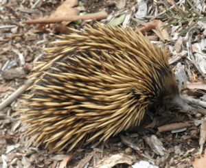

North Head Sanctuary Foundation is working with Government agencies towards the establishment of
Car-rang-gel Sanctuary on North Head at the gateway of Sydney Harbour - a
flagship for Australia's environmental resolve and a celebration of our natural and cultural heritage.
Car-rang-gel Sanctuary on North Head, Sydney
Natural Heritage Management Statement
Introduction:
This Natural Heritage Statement forms part of suite of complementary strategic plans; Indigenous,
immigrant, geophysical, educational etc which have been developed to achieve the Vision of the North
Head Sanctuary Foundation. The aim is to "save what we have got, and protect and restore what we
can" of North Head's native biodiversity.
Natural Heritage has been chosen as the title because the plan aims to manage the
native biodiversity of North Head using an integrated, multi-species approach. The strategy seeks to
embrace vertebrates and invertebrates, plants and plant communities and the surrounding marine
environment. This said, the plan recognises the special role of the populations of little penguins,
weedy seadragons and long-nosed bandicoots as the icons of, and impetus for, the Car-rang-gel
Sanctuary on North Head. The plan does not value all living things at North Head. Weeds and
introduced animals are candidates for control or removal.
Restoration
Re-introducing pygmy possum
Restoration has been specifically addressed because the natural heritage vision sees
the environment of North Head 'better' than it is today. The plan thus goes beyond simply preserving
what has survived because of North Head's unique history. Restoration candidates would include any
appropriate (see objectives) plant or animal once native
to North Head, that has the potential to establish populations or communities that are sustainable,
such as: Click here to read about the re-introduction of
Bush Rats Click here to read about the re-introduction of
Brown Antechinus Click
here to read about the re-introduction of Pygmy Possum to North Head.
Minimisation of human impacts
Endangered Acacia terminalis ssp terminalis
Minimisation of human impacts will be an integral part of biodiversity management.
It is implicit that people will be highly controlled through a system of stratified levels of
access.
These could range from high access (e.g., education centre with museum or animal displays),
moderate access (e.g., bandicoot and penguin viewing decks to accommodate reasonably large groups),
to pedestrian access only areas (e.g., bush walk type experience on elevated board walks).
Biodiversity management at North Head should be experimentally based using adaptive management
principles with due regard to existing threatened, endangered or rare species.
Development and implementation of a detailed management plan will require diverse expert inputs
(e.g., plant ecology, population biology, pest management, etc). Cost effective research and
technical expertise can be expected to come from universities, and organisations like the Australian
Museum, and associated research students. In addition to this professional input there will be a
critical need for involvement of community expertise particularly in monitoring management outcomes
(e.g., ornithologists, and special interest groups developed from the North Head community).
Vision & Mission
Long-nosed bandicoot
Natural Heritage Vision
The natural heritage of North Head conserved, restored and secure.
Natural Heritage Mission
The maintenance, recovery and reintroduction of native species in their natural habitats, communities
and environments on North Head by:
Working with land managers, stakeholders and the community in the planning and implementing of
biodiversity management based on adaptive management principles.
Fostering research on North Head biodiversity and its conservation management.
Marshalling and coordinating human and financial resources.
Natural Heritage Objectives

Short-Beaked Echidna, or Spiny Anteater Tachyglossus aculeatus
To Establish:
The plant and animal assemblages of North Head before recent disruption and to what extent these were
due to Aboriginal practices.
The critical boundary (or boundaries) to North Head (including marine areas) and effective means
to protect them (e.g., fences, baiting, education etc).
The technical limits to sustainable biodiversity conservation and restoration on North Head.
To Identify:
What will be the ongoing management needs of existing, or restored populations or communities,
set by the above constraints. In particular, to identify and establish suitable areas as
protected habitats for the little penguin and long-nosed bandicoot.
Ways to effectively manage the Sanctuary-Urban interface. This is both to protect the sanctuary
and extend its biodiversity benefits into urbanised Manly.
The threats posed by introduced predators (e.g., fox compared with cats and domestic dogs) and
competitors (e.g., weeds, non-native rodents).
To Contribute to:
Coordinated development and implementation of detailed operational management plans drawing on diverse
expert inputs (e.g., plant ecology, population biology, pest management, etc).
Research and technical expertise from universities, and organisations like the Australian
Museum, and associated research students.
Community expertise particularly in monitoring management outcomes (e.g., ornithologists, and
other special interest groups).
This Biodiversity Management Plan was prepared in 2002 by the NHSF Biodiversity Management working group.
Comments about the Geology of North Head
The early dedication of North Head by the New South Wales and Commonwealth governments for quarantine
and military uses, and the establishment of park reserves, has resulted in the survival of many of
the headland's geological features, flora and fauna in a landscape with rich cultural associations,
both Aboriginal and more recent.
North Head is a striking cliff-bound tied island complex formed by the interaction of strong bedrock
and erosion associated with changes in sea level rise and topography. Surrounded by spectacular sea
cliffs up to 90 metres high, and flooded river valleys (rias), the morphology and principal
characteristics of the rias can be viewed from lookouts on the south side of Scenic Drive and from
the Quarantine Station. North Head also provides a highly accessible opportunity to view an array of
sedimentary depositional features associated with Hawkesbury Sandstone and the Newport Formation,
including crossbeds both normal and overturned, flaser bedding, shrinkage cracks, burrows and ball
and pillow deposits. The three lithofacies of the Hawkesbury Sandstone - sheet sandstone, massive
sandstone and mudstone can all be recognised at North Head.